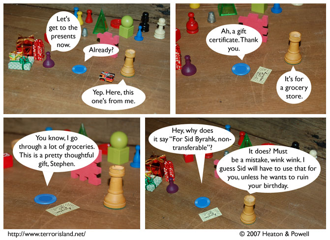

Strip #152
— Friday, June 1, 2007
Stephen has something in his eye. Something called scheming.
Notes, Thoughts, &c.
Ben’s Notes
Today’s xkcd is great. I used to love the Powers of Ten book when I was a kid.
I guess the film was neat too.
Lewis’s Notes
Ten points to anyone other than Ben who can deduce the in-story date of Jame’s birthday party.